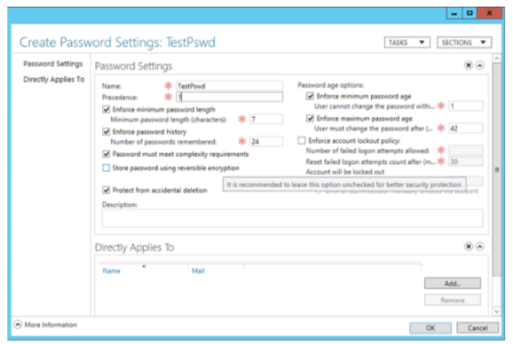

Overview of fine grained password policy implementation
Objective
Outline guidance and approach of considerations to be given to key elements of active directory with regard to the security of accounts, which when combined with RBAC give a much stronger degree of control and security to your network.
In particular, this pack covers the use of fine grained password policies and is aimed at increasing password security on Privileged Accounts over and above the standard domain password policy.
This document follows Microsoft’s official guidance published at https://docs.microsoft.com/en-us/windows-server/identity/ad-ds/get-started/adac/introduction-to-active-directory-administrative-center-enhancements–level-100-
Additional detail has been provided where appropriate.
Disclaimer
This detail is provided as guidance only.
Changes made to your Active Directory are made at your own risk.
Test your policies on demo account first, before adding users into the groups to which the policies are applied.
What are fine grained password policies?
You can use fine-grained password policies to specify multiple password policies within a single domain and apply different restrictions for password and account lockout policies to different sets of users in a domain.
For example, you can apply stricter settings to privileged accounts and less strict settings to the accounts of other users. In other cases, you might want to apply a special password policy for accounts whose passwords are synchronized with other data sources.
Why use fine grained password policies ?
Fine-grained password policies give you the ability to force a unique password policy to a specific group of users in your Active Directory.
The main reason to use these policies is to set stronger password policies onto the (ideally RBAC) groups of privileged user accounts without forcing the entire user base to have to conform to the much more stringent requirements of a privileged account.
By using fine grained password policies you enhance your security for the user groups for privileged system access that are likely to be the primary targets which could be compromised in any malicious attack which may occur.
System requirements
Fine grained password policies apply only to global security groups and user objects (or inetOrgPerson objects if they are used instead of user objects).
By default, only members of the Domain Admins group can set fine-grained password policies. However, you can also delegate the ability to set these policies to other users. The domain functional level must be Windows Server 2008 or higher.
You must use the Windows Server 2012 or newer version of Active Directory Administrative Center to administer fine-grained password policies through a graphical user interface.
Step-by-step guide to implementation
Step 1: Raise the domain functional level
Step 2: Create test required detail (users, group, and organizational unit)
Step 3: Create a new fine-grained password policy
Step 4: View a resultant set of policies for a user
Additional Guidance Provided:
Edit a fine-grained password policy
Delete a fine-grained password policy
Step 1 : Raise the domain functional level
The minimum domain functional level needed is 2008, but we recommend 2012 as a minimum. Ideally you should be running the highest level of Domain and Forest Functionality possible
Right click the Windows PowerShell icon, click Run as Administrator and type dsac.exe to open Active Directory Admin Centre (ADAC).
Click Manage, click Add Navigation Nodes and select the appropriate target domain in the Add Navigation Nodes dialog box and then click OK.
Click the target domain in the left navigation pane and in the Tasks pane, click Raise the domain functional level. Select a forest functional level that is at least Windows Server 2008 or higher and then click OK. Ideally make this the highest you are able to without impacting the domain usage.
Step 2 : Create the test required detail
Create a new Organizational Unit in your Active Directory for testing (this is just to separate your test accounts from the rest of your domain accounts)
Create a number of new users in this OU
Create a new Global Security Group
Add the test users to the new Group
Step 3 : Create a new fine grained policy
To create a new fine grained password policy:
Right click the Windows PowerShell icon, click Run as Administrator and type dsac.exe to open Active Directory Admin Centre (ADAC).
Click Manage, click Add Navigation Nodes and select the appropriate target domain in the Add Navigation Nodes dialog box and then click OK.
In the ADAC navigation pane, open the System container and then click Password Settings Container.
In the Tasks pane, click New, and then click Password Settings.
Fill in or edit fields inside the property page to create a new Password Settings object. The Name and Precedence fields are required.

Under Directly Applies To, click Add, type a Group Name, and then click OK.
This associates the Password Policy object with the members of the global group you created for the test environment.
Click OK to submit the creation.
Step 4 : View a resultant set of policies (RSOP)
As part of the testing process, verify the RSOP
Right click the Windows PowerShell icon, click Run as Administrator and type dsac.exe to open Active Directory Admin Centre (ADAC).
Click Manage, click Add Navigation Nodes and select the appropriate target domain in the Add Navigation Nodes dialog box and then click OK.
Select a user that belongs to the group that you associated a fine-grained password policy.
Click View Resultant Password Settings in the Tasks pane.
Examine the password setting policy and then click Cancel.
This should reflect the Fine Grained Policy you have set for the user group.
Additional guidance
Edit a fine grained policy
Right click the Windows PowerShell icon, click Run as Administrator and type dsac.exe to open the Active Directory Admin Centre (ADAC).
Click Manage, click Add Navigation Nodes and select the appropriate target domain in the Add Navigation Nodes dialog box and then click OK.
In the ADAC Navigation Pane, expand System and then click Password Settings Container.
Select the fine grained password policy you want to amend.
As an example, to change the history go under Enforce password history, change the value of Number of passwords remembered to a new value.
Click OK in the confirmation dialog.
Delete a fine grained policy
Right click the Windows PowerShell icon, click Run as Administrator and type dsac.exe to open Active Directory Admin Centre (ADAC).
Click Manage, click Add Navigation Nodes and select the appropriate target domain in the Add Navigation Nodes dialog box and then click OK.
In the ADAC Navigation Pane, expand System and then click Password Settings Container.
Select the fine grained password policy you want to delete
Clear the Protect from accidental deletion checkbox and click OK.
Select the fine grained password policy, and in the Tasks pane click Delete.
Click OK in the confirmation dialog.